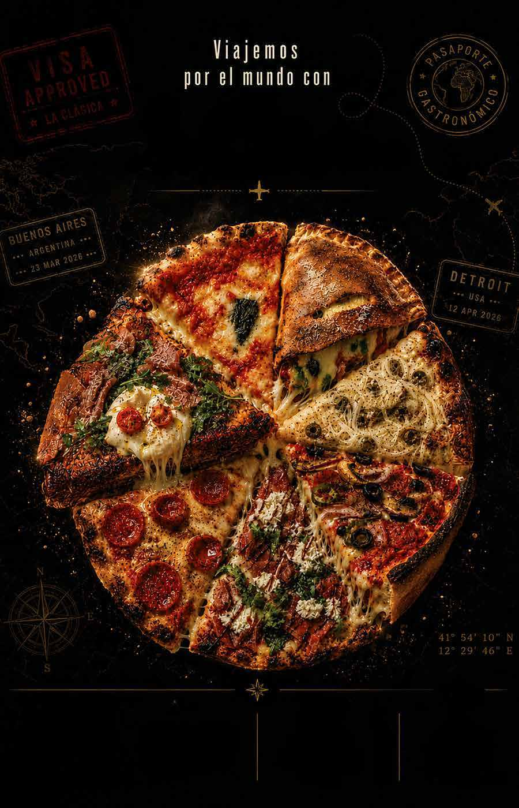
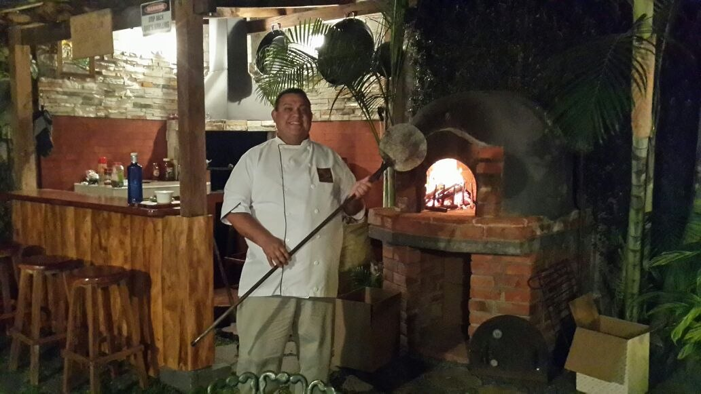
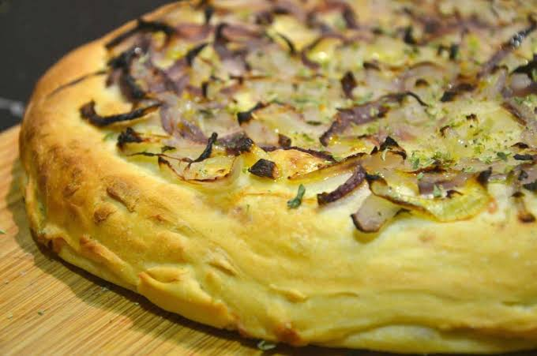
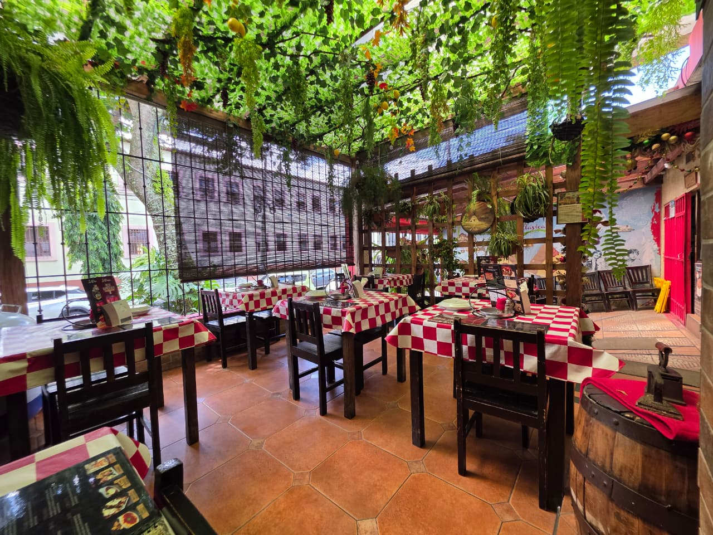
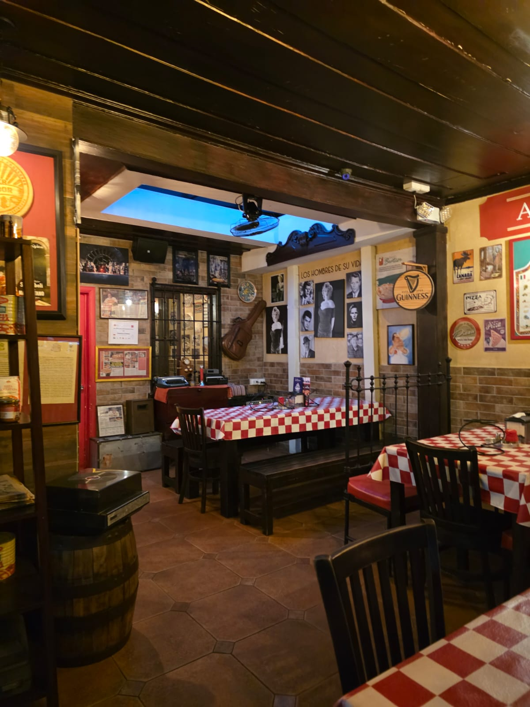
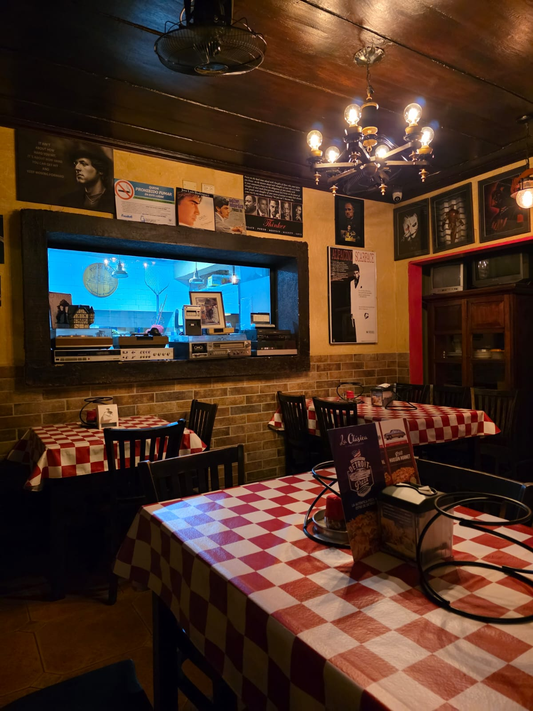
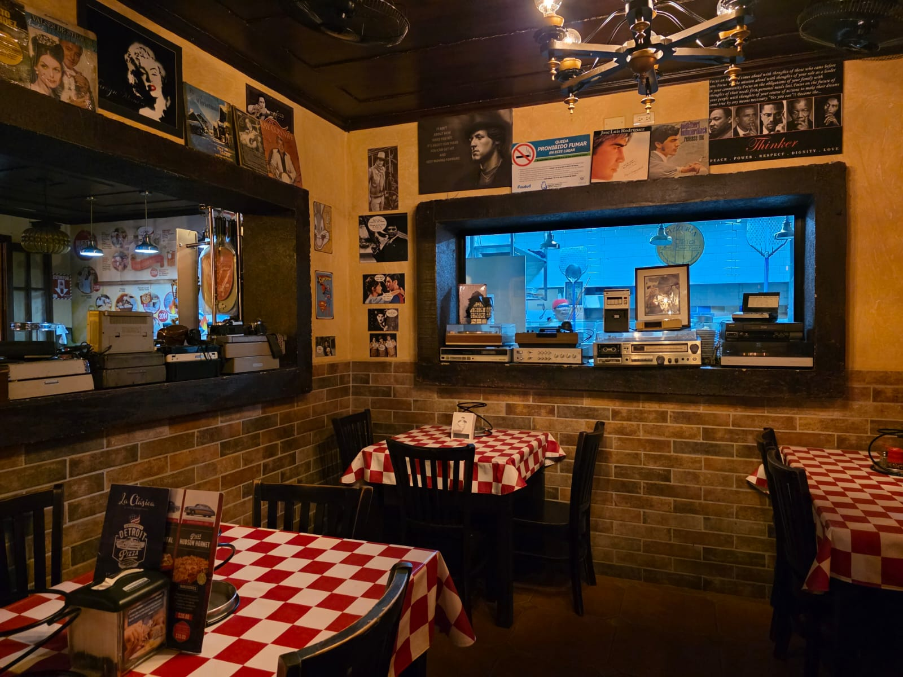
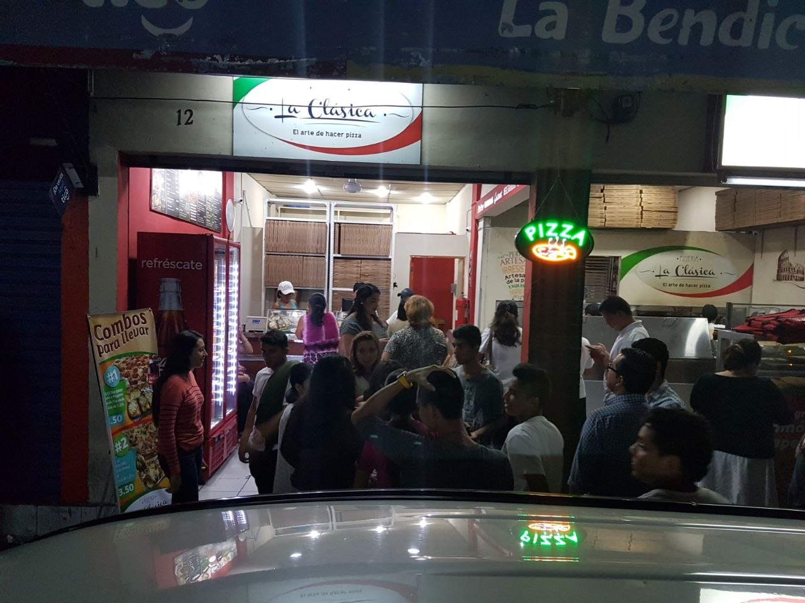
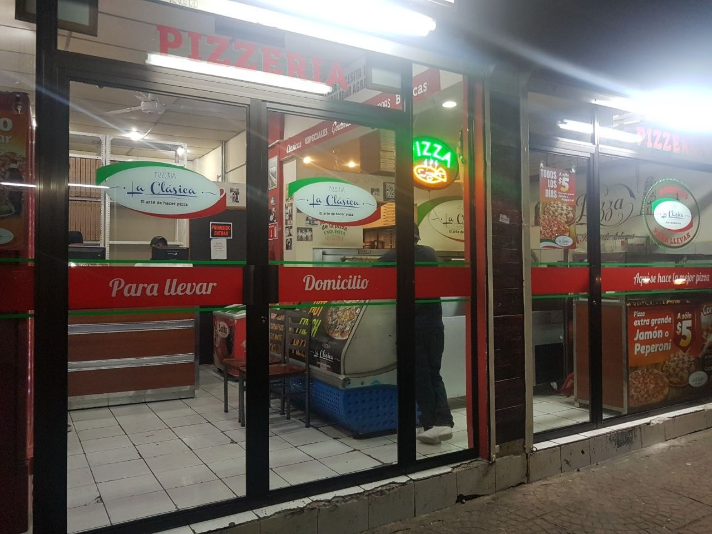
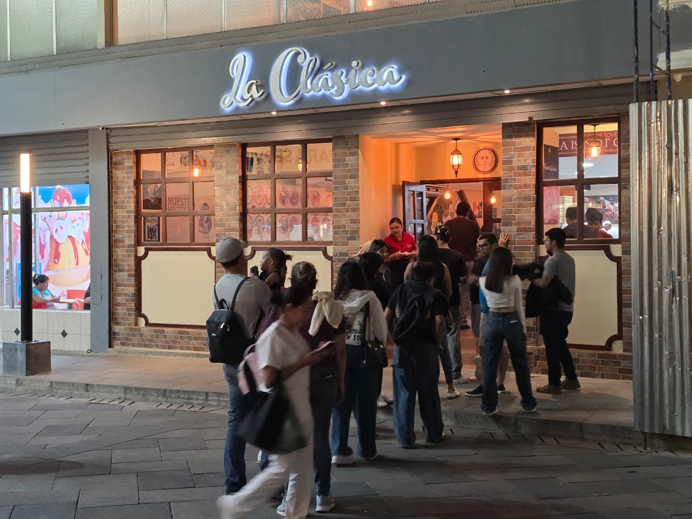

Napolitana
Suave, elástica y marcada por el fuego.
Explorar →Pizzería artesanal · El Salvador
Ingredientes seleccionados, fuego y tradición italiana con alma salvadoreña.

Reconocimientos
Una trayectoria reconocida por 50 Top Pizza y la industria internacional: del puesto 39 en 2024 al 5.º lugar de Latinoamérica en 2026.
JUAN CÁRCAMO
Haz clic en un reconocimiento para verlo en detalle.

Nuestra historia
La Clásica nació en 2014 en el jardín de un hogar salvadoreño, cuando Juan Cárcamo soñaba con preparar las mejores pizzas para su familia y amigos. Ese espíritu continúa: tiempo de fermentación, ingredientes de altísima calidad, temperatura, técnica y pasión por cada estilo.
Conoce a Juan →Hechas a su manera
Suave, elástica y marcada por el fuego.
Explorar →Ligera, crujiente y generosa.
Explorar →Rectangular, de bordes caramelizados.
Explorar →Fina, intensa y con carácter.
Explorar →El origen importa
Tiempo, paciencia y una masa que habla por sí misma.
El punto de partida para una salsa franca y luminosa.
Equilibrio, cremosidad y el gesto exacto.
Un acento fresco para terminar cada historia.

Especialidades del mundo


Deep Dish Pizza · USA (8 porciones)
Masa profunda estilo tazón, rellena de capas masivas de queso, pepperoni, chile verde, cebolla y cubierta con salsa de tomate.
Deep Dish Pizza · USA (8 porciones)
Pepperoni, jamón, hongos, aceitunas negras, chile verde, cebolla, mozzarella y salsa de tomate.
La Fugazzeta · Argentina (8 porciones)
Sin salsa de tomate. Rellena de mucho queso, jamón, mucha cebolla, aceitunas verdes y orégano. Evolución de la clásica pizza de cebolla italiana.
El pizzaiolo
La búsqueda por una pizza honesta empezó en un jardín y no ha dejado de crecer. Técnica, producto y una mesa siempre abierta.
Pizza Maker of the Year · 2026

La mesa, el fuego, la gente






Nuestra mesa
01
Lunes a viernes: 12:00 PM – 2:00 PM / 6:00 PM – 9:00 PM
Sábado y domingo: 12:00 PM – 9:00 PM
+503 7967 1174
02
Martes a viernes: 12:00 PM – 2:00 PM / 6:00 PM – 9:00 PM
Sábado y domingo: 12:00 PM – 9:00 PM
+503 7967 1174

03
Horarios y teléfono: confirmar con la sucursal.
Cómo llegar ↗